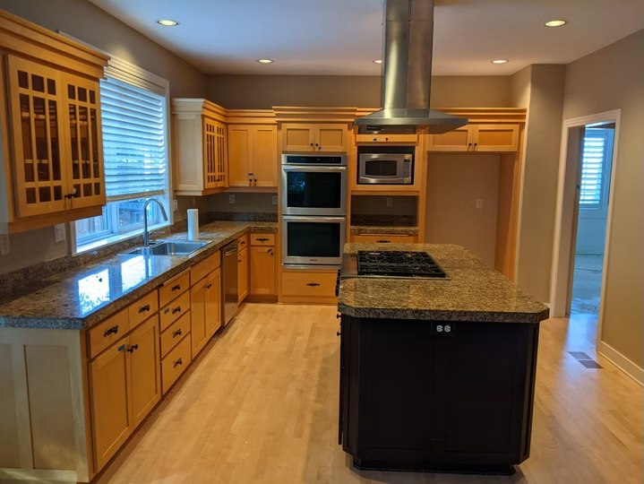

Before & After

Before – The original kitchen featured honey maple cabinetry, speckled granite countertops, a dark center island with a cooktop, and light hardwood floors that had seen better days.

After – The remodeled kitchen features white shaker cabinetry with transom glass uppers, white quartz countertops, a large espresso-stained island, glass globe pendant lighting, and rich engineered hardwood floors.
Project Snapshot
Project Story
The Homeowner's Challenge
This Bethany homeowner had lived with their kitchen for over fifteen years. While the layout worked reasonably well, the honey maple cabinetry, speckled granite countertops, and beige-toned walls made the space feel stuck in the early 2000s. The homeowners enjoyed cooking and entertaining, but the kitchen no longer reflected their taste or the way they used the space.
The existing island housed a gas cooktop with a large stainless hood above, which dominated the center of the room and blocked sightlines to the dining and family areas. The double wall ovens worked fine mechanically, but the surrounding cabinetry offered limited storage. The light maple flooring had worn unevenly over the years and clashed with the homeowners' vision for a warmer, more contemporary look.
Homeowners in Bethany looking for kitchen remodeling services often face this exact situation — a kitchen that still functions but no longer fits the style or needs of the household. This family wanted a brighter, more modern kitchen with improved storage, a cleaner aesthetic, and a layout that felt more open and connected to the rest of the home.
The Remodeling Solution
GRIT Builders worked with the homeowners to develop a design that preserved the kitchen's strong bones — the overall footprint, window placement, and plumbing locations — while completely transforming its look and functionality. Rather than a full structural overhaul, this project focused on high-impact upgrades that delivered a dramatic visual change.
The honey maple cabinets were removed and replaced with custom white shaker cabinetry throughout. Upper cabinets were extended to the ceiling with transom glass panels above, which added vertical interest and made the space feel taller. Interior cabinet lighting was added behind the glass uppers, giving the kitchen a warm glow in the evenings.
The center island was redesigned with an espresso-stained base and a large white quartz countertop, creating a striking contrast that anchors the room. The cooktop was relocated from the island to the perimeter, freeing up the island entirely for prep work and casual seating. Three glass globe pendant lights were installed above the island, replacing the bulky range hood and opening up the sightlines across the room.
On the appliance side, the homeowners upgraded to a built-in professional-grade refrigerator with a glass front panel, integrated seamlessly into the cabinetry wall. The double wall ovens were retained in the new layout, now flanked by tall pantry cabinets that dramatically increased storage capacity.
Materials & Features
Every material was selected to balance durability with a clean, contemporary aesthetic. The white quartz countertops offer a low-maintenance surface that resists staining and scratching — an important consideration for a family that cooks frequently. The subway tile backsplash was installed in a classic straight-set pattern, keeping the lines simple and letting the cabinetry and countertops take center stage.
The flooring was replaced with engineered hardwood in a rich walnut tone, adding warmth and contrast to the white cabinetry above. All hardware was updated to matte black pulls and knobs, which complement the dark island base and pendant light fixtures.
- Cabinetry
- Custom white shaker with soft-close hinges and transom glass uppers
- Countertops
- White quartz with subtle veining
- Backsplash
- White ceramic subway tile, straight-set pattern
- Island
- Espresso-stained base with quartz waterfall edge
- Flooring
- Engineered hardwood in walnut tone
- Fixtures
- Matte black hardware, glass globe pendant lights
- Appliances
- Built-in professional refrigerator, double wall ovens, integrated dishwasher
Project Timeline
The project followed a structured schedule to minimize disruption to the household.
- Design & Planning: 3 weeks — finalizing layout, material selections, and appliance orders
- Demolition & Prep: 1 week — removing existing cabinets, countertops, flooring, and appliances
- Rough Work: 1 week — electrical updates, plumbing adjustments for cooktop relocation
- Installation: 4 weeks — cabinetry, countertops, flooring, backsplash, and appliances
- Finishing & Punch List: 1 week — hardware, lighting, final inspections, and touch-ups
- Project Completion: On schedule
The Final Result
The completed Bethany kitchen remodel is a striking transformation. What was once a dated, maple-toned kitchen now feels bright, modern, and purposeful. The white cabinetry and quartz countertops create a clean backdrop, while the dark island and walnut hardwood floors add depth and warmth. The transom glass uppers and interior lighting give the space an elevated, custom feel that the homeowners describe as their favorite feature.
With the cooktop moved off the island, the family now has a generous prep and gathering surface that serves as the hub of daily life. Morning coffee, homework sessions, and weekend dinner parties all happen at the island. The improved storage — particularly the tall pantry cabinets flanking the ovens — means countertops stay clear and everything has a place.
Bethany Remodeling by GRIT Builders
This kitchen remodel was completed in Bethany, Oregon, a growing community on the west side of the Portland metro area. GRIT Builders serves homeowners throughout Bethany and surrounding neighborhoods including Beaverton, Lake Oswego, West Linn, Tigard, and Tualatin. Whether you are updating a kitchen, renovating a bathroom, or planning a larger home renovation, our team brings the same attention to detail and craftsmanship to every project.